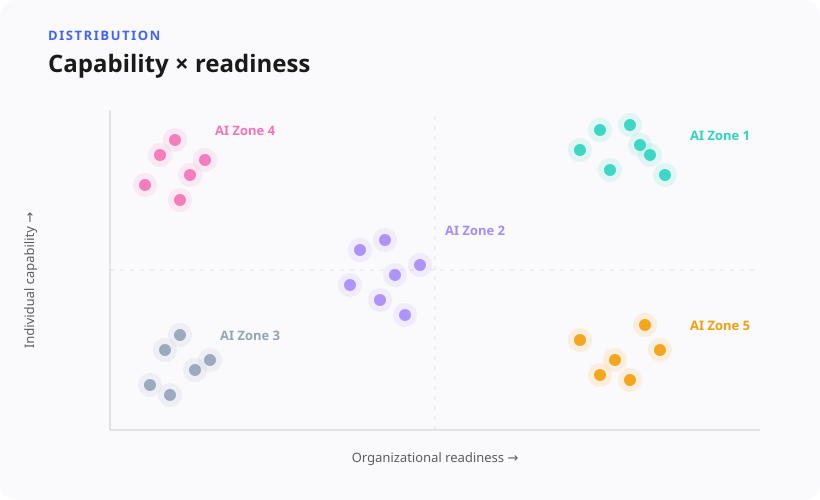
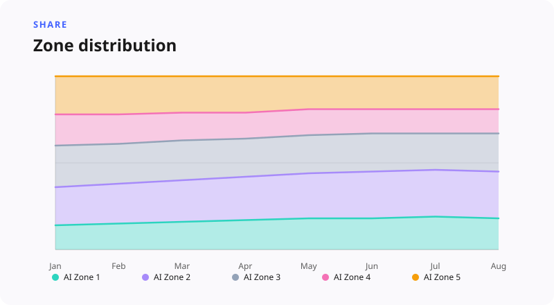

AI Adoption Zones
5 zones — one shared taxonomy
A five-zone adoption framework (AI Zone 1–5) scoring individuals and orgs, validated against survey and behavioral data, with population sizing kept deliberately separate from profiling.
Situation
When AI features started shipping at pace, the organization still lacked a shared language for who was ready to adopt. Product talked about power users. Sales talked about skeptical enterprises. Research talked about personas that never quite matched either. Everyone was pointing at the same product and describing different people.
Usage data made the gap worse, not better. Event tables could tell you what someone clicked yesterday. They could not tell you whether the person was capable but blocked by their company, or sitting in a ready organization without the skills to take advantage of it. Roadmaps and GTM kept optimizing for informal labels that meant different things in every room.
Task
My job was to create a durable adoption framework — something psychometric enough to defend, practical enough for product to use, and honest enough to separate "who answered our survey" from "how many people like this exist in the product." That meant scoring individuals and organizations, mapping them into actionable zones, validating those zones against both survey and behavioral data, and estimating population size without pretending the sample was the market.
Approach
I adapted a Work Trend Index–style construct — Individual Capability crossed with Organizational Readiness — into a five-zone model (AI Zone 1–5) tailored to our context. Respondents’ Likert answers became equal-weight composite scores, with absolute cutoffs and a mid band so we were not forcing every ambiguous person into a dramatic corner.
From there the work became a full research system. Survey respondents were tagged into zones, then enriched with firmographics and AI behavior from Snowflake so we could profile over- and under-indexing by plan, role, and industry. Validation was deliberate rather than decorative: FDR-corrected chi-square tests, Spearman correlations, logistic regression, and random forest models trained on non-circular features, with cross-validated accuracy reported plainly. Population sizing used post-stratification on plan × AI-user cells — survey zone rates scaled by MAU composition — so profiling and sizing stayed methodologically separate. The outputs were packaged like a product: framework docs, stakeholder HTML, Miro board kits, zone rosters, and significance summaries people could reuse without me in the room.

Result
The strategic impact was immediate and transformative. Research, Product, and GTM unified around a single, shared taxonomy for AI strategy. The quantitative validation proved bulletproof under executive scrutiny: a substantial majority of primary-zone hypotheses retained significance after FDR correction, cross-validated accuracy hit target thresholds across classes, and discrimination between high-performing and stalled segments remained exceptionally strong — surfacing formal AI training as one of the strongest predictive constructs of adoption.
Beyond the numbers, the project reshaped our organization’s data culture. We established a strict distinction between sample concentration (overindexation) and population scale (post-stratification), elevating how executive teams discuss survey insights and ensuring the framework remains an enduring cornerstone of product strategy.

Methodology
This case is the cleanest proof of construct validity and survey psychometrics in the portfolio: dual-axis composites, Likert encoding, cutoff design, and an explicit mid band. It also shows causal humility with proper statistics — FDR control, effect sizes, odds ratios, and cross-validation framed as association and predictive validity, not proof that zone membership "causes" outcomes. Behavioral and attitudinal data were fused on purpose. Insights were productized for stakeholders. And research-systems thinking showed up in the decision to keep sizing and profiling as separate playbooks.
Skills demonstrated: Construct validity & psychometrics, Segmentation (LCA, clustering), Regression & effect sizes, Survey design